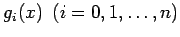

Inhalt Index DeskTop Bronstein

 Numerische Mathematik Darstellung von Kurven und Flächen mit Hilfe von Splines Bikubische Splines Bikubische Interpolationssplines
Numerische Mathematik Darstellung von Kurven und Flächen mit Hilfe von Splines Bikubische Splines Bikubische Interpolationssplines


Der bikubische Spline-Ansatz (19.242) ist ein Beispiel für einen sogenannten Tensorprodukt-Ansatz, der die Form
hat und vor allem für Approximationen über Rechteckgittern geeignet ist.
Die Funktionen  und bilden zwei linear unabhängige Funktionssysteme. Tensorprodukt-Ansätze haben in numerischer Hinsicht den großen Vorteil, daß sich z.B. die Lösung der zweidimensionalen Interpolationsaufgabe (19.241) auf die Lösung von eindimensionalen Aufgaben zurückführen läßt. Darüber hinaus gilt: Die zweidimensionale Interpolationsaufgabe (19.241) ist mit dem Ansatz (19.245) eindeutig lösbar, wenn
| (19.246) |
Dabei sind die Funktionen Ni,4(x) und Nj,4(y) normalisierte B-Splines der Ordnung 4. Mit r wird die Anzahl der Knoten bezüglich  , mit p die Anzahl der Knoten bezüglich y bezeichnet. Die Knoten sind frei wählbar, aber für die Lösbarkeit der Interpolationsaufgabe müssen gewisse Bedingungen an die Lage der Knoten und die der Stützstellen der Interpolation gestellt werden.
, mit p die Anzahl der Knoten bezüglich y bezeichnet. Die Knoten sind frei wählbar, aber für die Lösbarkeit der Interpolationsaufgabe müssen gewisse Bedingungen an die Lage der Knoten und die der Stützstellen der Interpolation gestellt werden.
B-Spline-Ansätze führen bei der Lösung von Interpolationsaufgaben auf Gleichungssysteme, deren Koeffizientenmatrizen Bandstruktur haben, also von numerisch günstiger Struktur sind.
Lösungen für verschiedene Interpolationsaufgaben mit Hilfe von bikubischen B-Spline-Ansätzen s. Lit. 19.15.